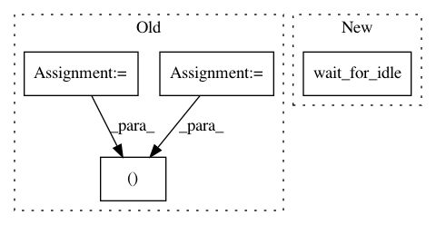

10b8a028adc8d7b10a9aaf11fcbb0918904518b1,test/R/test_R_kernel.py,TestRKernel,testGetPythonDataFrameFromR,#TestRKernel#,50
Before Change
""")
clear_channels(iopub)
execute(kc=kc, code="%use R")
_, stderr = assemble_output(iopub)
self.assertEqual(stderr, "")
execute(kc=kc, code="%get df")
wait_for_idle(kc)
After Change
""")
clear_channels(iopub)
execute(kc=kc, code="%use R")
wait_for_idle(kc)
execute(kc=kc, code="%get df")
wait_for_idle(kc)
execute(kc=kc, code="dim(df)")
res = get_display_data(iopub)
In pattern: SUPERPATTERN
Frequency: 3
Non-data size: 4
Instances
Project Name: vatlab/SoS
Commit Name: 10b8a028adc8d7b10a9aaf11fcbb0918904518b1
Time: 2017-08-04
Author: ben.bog@gmail.com
File Name: test/R/test_R_kernel.py
Class Name: TestRKernel
Method Name: testGetPythonDataFrameFromR
Project Name: vatlab/SoS
Commit Name: 10b8a028adc8d7b10a9aaf11fcbb0918904518b1
Time: 2017-08-04
Author: ben.bog@gmail.com
File Name: test/JavaScript/test_JavaScript_kernel.py
Class Name: TestJavaScriptKernel
Method Name: testGetPythonDataFrameFromJavaScript
Project Name: vatlab/SoS
Commit Name: 5d9697cbccaa7e0ef193c54bfbdd52b0bf9b2afe
Time: 2017-06-20
Author: ben.bog@gmail.com
File Name: test/jupyter/test_sos_magics.py
Class Name: TestSoSMagics
Method Name: testMagicSave